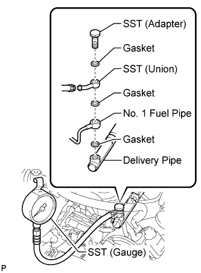

FUEL SYSTEM > ON-VEHICLE INSPECTION |
| 1. CHECK FUEL PUMP OPERATION AND FUEL LEAK |
Connect the intelligent tester to the DLC3.
Turn the engine switch on (IG) and intelligent tester ON.
Enter the following menus: Powertrain / Engine and ECT / Active Test / Activate the Fuel Pump Speed Control.
Check that there are no fuel leaks after doing maintenance anywhere on the fuel system.
 |
Check that the pulsation damper screw rises up when the fuel pump operates.
If the operation is not as specified, check the following parts:
Turn the engine switch off.
Disconnect the intelligent tester from the DLC3.
| 2. CHECK FUEL PRESSURE |
Check that the battery voltage is 11 to 14 V.
Discharge the fuel system pressure (Click here).
Disconnect the cable from the negative (-) battery terminal.
Remove the No. 1 fuel pipe from the LH delivery pipe (Click here).
 |
Install the No. 1 fuel pipe and SST (union) to the delivery pipe with the 3 gaskets and another SST (adapter).
Wipe off any splattered gasoline.
Reconnect the cable to the negative (-) battery terminal.
Connect the intelligent tester to the DLC3.
Turn the engine switch on (IG) and intelligent tester ON.
Enter the following menus: Powertrain / Engine and ECT / Active Test / Activate the Fuel Pump Speed Control.
Measure the fuel pressure.
Disconnect the intelligent tester from the DLC3.
Start the engine.
Measure the fuel pressure at idle.
Stop the engine.
Check that the fuel pressure remains as specified for 5 minutes after the engine has stopped.
After checking the fuel pressure, disconnect the cable from the negative (-) battery terminal and carefully remove SST to prevent gasoline from splashing.
Reinstall the No. 1 fuel pipe to the LH delivery pipe (Click here).
Reconnect the cable to the negative (-) battery terminal.
Check for fuel leaks (refer to the "Check Fuel Pump Operation And Fuel Leak" procedure).